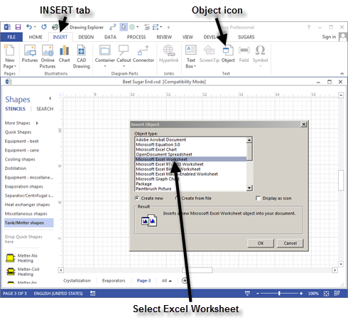
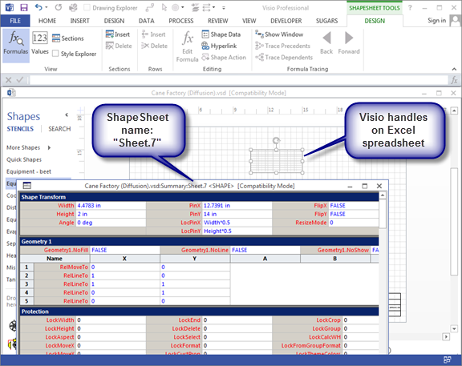
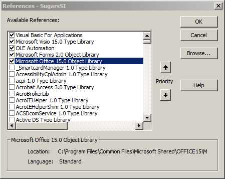
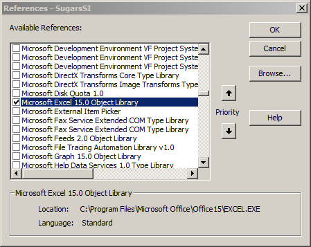
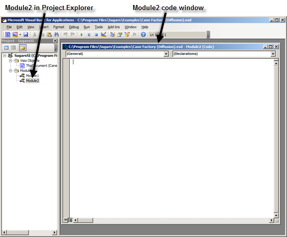
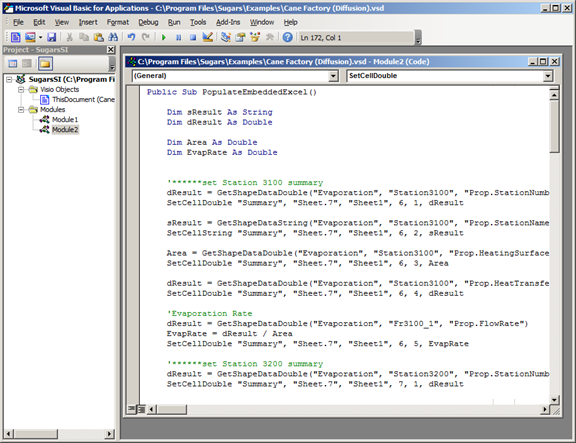
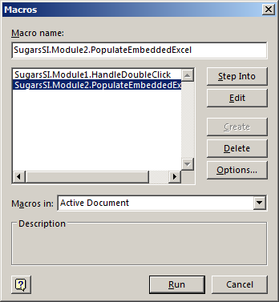

The Cane Factory (Milling) example model provided with Sugars has an embedded Excel spreadsheet as an example. You can copy the Visual Basic (VB) code from this example into your own model and then revise the code to select the Sugars data that you want exported from your model into the Excel spreadsheet. There is code for both an embedded spreadsheet and an external spreadsheet running in Excel separate from Visio/Sugars.
To create the embedded spreadsheet in your model, open your model and select the INSERT tab and then click on the Object icon in the Text group on the Visio ribbon menu (see below).

Scroll down to find Microsoft Excel Worksheet. Select the "Create new" radio button option and then click the OK button.
Position the spreadsheet where you would like to see it on the page. Click outside of the newly inserted spreadsheet to go back to Visio and then click on the spreadsheet object again to get the normal Visio handles around it. From Visio, click DEVELOPER > Show ShapeSheet and in the title bar of the ShapeSheet for the spreadsheet object, look for the Sheet number and write it down (see below). The sheet number will be used in the VB code to send Shape Data to the spreadsheet object.

Next, click DEVELOPER > Visual Basic to open the VB editor. In the VB editor, click Tools > References and check the box for “Microsoft Office 15.0 Object Library” (see below).

And, find the “Microsoft Excel 15.0 Object Library” and check its box (see below).

Click the OK button to return to the VB editor and then click Insert > Module to open a new module2 (see below).

Start another instance of Visio by double clicking on the Visio icon on the desktop. Once the 2nd instance of Visio is running, open the Cane Factory (Milling) example that is provided with Sugars in the “C:\Program Files\Sugars\Examples” directory. Once the Cane Factory (Milling) module is loaded, click DEVELOPER > Visual Basic in the “Code” grouping and in the Module2 code window copy all of the code to the clipboard starting with “Public Sub PopulateEmbeddedExcel()” up to “Public Sub PopulateExternalExcel()”. Module2 will be shown in the Project Explorer window. Just click on the Module2 entry in Project Explorer to see all of the code for this module. “Module1” and “ThisDocument (Cane Factory (Milling))” contains code used by Sugars to communicate with Visio and it is the same for every Sugars model and does not need to be copied.
Next, return to the 1st instance of Visio that contains your model with the newly inserted spreadsheet, and paste the code copied from the Cane Factory (Milling) example into the Module2 code window. The result should look the same as shown in the figure below.

Review the code to see how data is imported into the spreadsheet. The code is fairly self-explanatory. Modify this code to get data from the Sugars objects (that is, stations and flow streams - see the title block of the Shape Data window in the model to get the name of a station or flow stream). Note that there are several VB subroutines in the Cane Factory (Milling) example code to make it easier. A description of the subroutines is given below.
Example Functions to Shape Data Values
GetShapeDataString – gets a string value from a Shape Data value
Parameters:
PageName – the name of the page where the Sugars shape is located
ShapeName – the name of the shape with the Shape Data
ShapeData – the name of the Shape Data (prefixed with “Prop.”)
Returns a variable of type string
GetShapeDataDouble – gets a double value from a Shape Data value
Parameters:
PageName – the name of the page the Sugars shape is on
ShapeName – the name of the shape with the Shape Data
ShapeData – the name of the Shape Data (prefixed with “Prop.”)
Returns a variable of type double
Example Functions to Set a Cell in an Embedded Excel Spreadsheet
SetCellString – Sets a string value into an embedded Excel spreadsheet
Parameters:
PageName – name of the page where the Excel spreadsheet is embedded
ShapeName – name of the shape which is the embedded Excel spreadsheet
SheetName – the name of the Excel worksheet
Row – the row of the cell to insert the value
Column – the column of the cell to insert the value
Value – the string value to insert into the spreadsheet cell
SetCellDouble – Sets a double value into an embedded Excel spreadsheet
Parameters:
PageName – name of the page where the Excel spreadsheet is embedded
ShapeName – name of the shape which is the embedded Excel spreadsheet
SheetName – the name of the Excel worksheet
Row – the row of the cell to insert the value
Column – the column of the cell to insert the value
Value – the double value to insert into the spreadsheet cell
PopulateEmbeddedExcel – Example of getting Shape Data and setting cells in an embedded spreadsheet
Example Functions to Set a Cell in an External Excel Spreadsheet
SetExtCellString – Sets a string value into an external Excel spreadsheet
Parameters:
ExcelSheet – object which is the Excel spreadsheet
Row – the row of the cell to insert the value
Column – the column of the cell to insert the value
Value – the string value to insert into the spreadsheet cell
SetExtCellDouble – Sets a string value into an external Excel spreadsheet
Parameters:
ExcelSheet – object which is the Excel spreadsheet
Row – the row of the cell to insert the value
Column – the column of the cell to insert the value
Value – the double value to insert into the spreadsheet cell
GetExternalExcelSheet – Opens Excel and creates a spreadsheet
Returns an object which is of type Excel.Worksheet
PopulateExternalExcel – Example of getting Shape Data and setting cells in external spreadsheet
To run a macro in Visio, click DEVELOPER > Macros and select the module to be run (see below). The “SugarsSI.Module2…” macro must be run to transfer data from Sugars (i.e., Shape Data in each shape) to the embedded spreadsheet.

Finally, to make it easy to run the VB code, click on the spreadsheet object, then click on the Options… button to make a shortcut key (e.g., ‘e’) and then add descriptive text. The latest data from a Sugars balance can now be transferred to the Excel spreadsheet by simply clicking on the embedded spreadsheet and then pressing the Ctrl > e keys to update the spreadsheet.